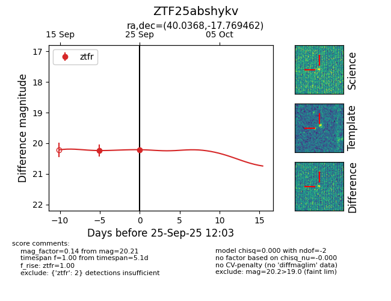
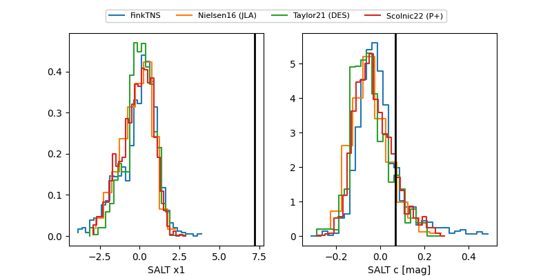

FINK: ZTF25abshykv
Lasair: ZTF25abshykv
ALeRCE: ZTF25abshykv
ZTF25abshykv (ztf,fink)
equatorial (ra, dec) = (40.0368,-17.76946)
galactic (l, b) = (198.1620,-63.26797)


last ztfr=20.21
2 ztfr detections